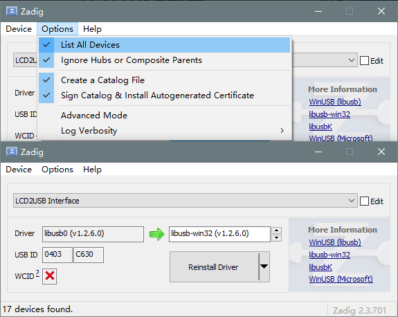
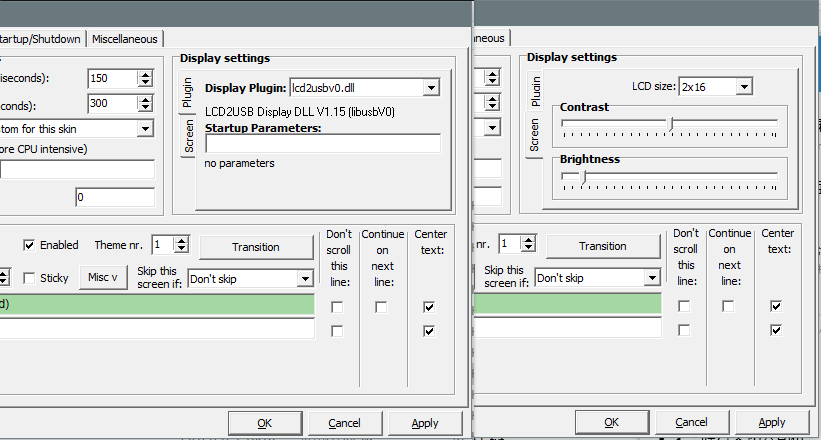

LCD2USB使用说明¶
硬件¶
显示屏左右两个USB口可用于供电及传输数据的，两个USB口功能完全相同，可以随意使用。
背面的右上角有一个电位器，可用于调节液晶屏的对比度。
背面的右下角有三个按钮，用于时钟模式下的调节。
显示屏和底板之间有一个按钮，按住这个按钮并连接电脑可更新固件。
LCD2USB模式¶
LCD2USB可以连接电脑作为状态显示器使用。
安装驱动¶
连上电脑后，电脑会提示发现了一个新设备“LCD2USB Interface”。下载zadig并打开，点击“Options”，勾上“List All Devices”选项， 然后在下面的下拉框中选择设备“LCD2USB Interface”。将Driver右边的框由“WinUSB”改为“libusb-win32”， 点击“Replace Driver”，驱动即安装完成。

使用 AIDA64 作为显示控制器¶
AIDA64是一款系统信息查看工具，它支持将系统信息输出至LCD2USB设备。如果你不想使用AIDA64，可以看下面的章节。
打开AIDA64，选择“文件-设置”，在左边展开“硬件监视工具”，选择“LCD”。在右边的面板中点击“LCD2USB”，勾上“启用 LCD2USB LCD 支持”，将LCD类型改为16x2。接着，你可以在左边的“LCD选项”中更改你要显示的内容。
使用 LCD Smartie 作为显示控制器¶
LCD Smartie是一个专门用于LCD显示的工具。你可以下载官方版本亦或者是去下载汉化版本。下载完成后解压，检查“displays”文件夹里面是否含有“lcd2usb.dll”。如果没有，请下载LCD2USB.dll并放入displays文件夹。
运行LCDSmartie，点击左下角的Setup，在“Display Settings”里面点击“Plugins”，将“Display Plugin”改为“LCD2USB.dll”（或“lcd2usbv0.dll”）；然后选择“Screen”，将“LCD Size”改为“16x2”。点击OK后关闭软件再重新打开，即可看到屏幕上正常显示了。

时钟模式¶
若不使用LCD2USB的软件控制，则默认时钟模式。
时间显示页面¶
按下任意按键可以在屏幕背光熄灭时点亮屏幕背光。
短按P键则可以强制刷新温度测量值。
长按P键进入可以进入设置菜单。
菜单页面¶
进入菜单后可以使用+-键选择子菜单，短按P键进入子菜单，长按P键退出菜单。
进入子菜单后使用+-键调整当前光标指示的数值，短按P键确认并移动光标，长按P键不保存并退出子菜单。
Date：调整日期
Time：调整时间
Temp. Offset：调整温度偏移，用于校正温度计。长按P键可以重置校正值。
Light Level：调整背光亮度。
Light Auto Off：调整背光自动关闭的时段。背光在这个时间段内会在5秒后自动关闭。
更新固件¶
下载固件文件与固件更新工具，打开固件更新工具，选择“8位CH55X系列”，芯片型号选择“CH552”，用户程序文件选择刚刚下载好的固件文件。将LCD2USB从电脑断开，按住液晶屏后方的按钮并将LCD2USB连上电脑，然后松开按钮。这时，USB设备列表会出现一个设备，点击“下载”即可。
更新完成后若LCD2USB没有恢复正常工作，可以将LCD2USB从电脑上断开并重新连接。
故障排除¶
字体暗淡或者字体背景太深，对比度不正确：
使用螺丝刀调整LCD2USB背部右上角的电位器，使对比度正确。
断开电源后时间无法正常保存：
将屏幕模块与控制模块（底板）小心的分开，更换底板上的后备电池。